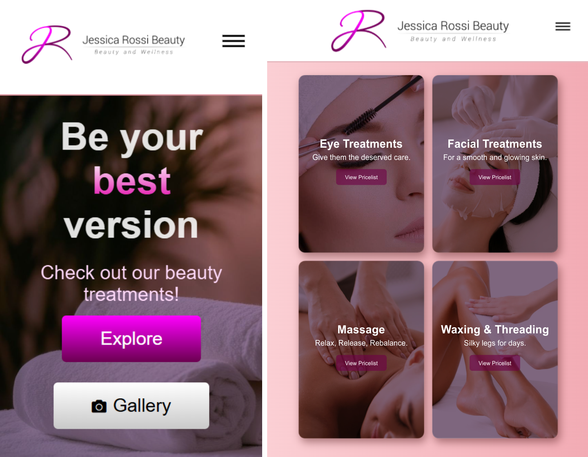
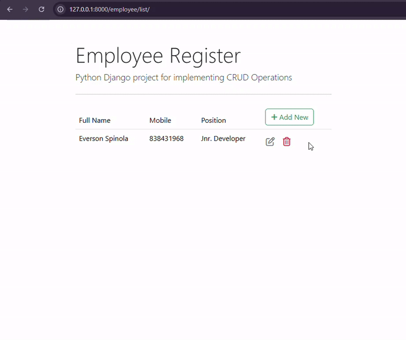
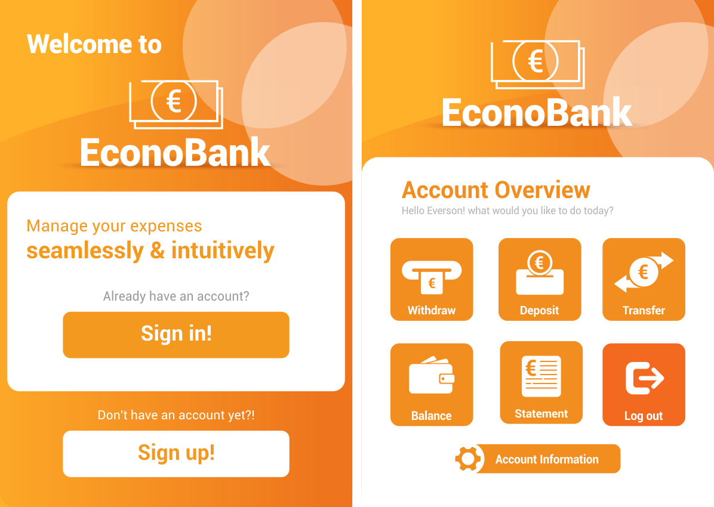

Intro
Hello, I’m Everson Spinola - an enthusiastic IT professional based in Dublin, Ireland, with full work rights under a Stamp 4 visa.
I bring a unique background that blends creative design experience with strong technical foundations in software development and IT support.
After earning a Bachelor of Science in Information Technology from CCT College Dublin, I pursued hands-on projects in full-stack development,
application support, and IT service management - complemented by ITIL 4 certification. My work includes building scalable CRUD applications,
desktop banking systems, and POS rental platforms using technologies like Java, Python, Django, SQL and JavaScript.
Having transitioned from graphic design, I offer an eye for detail, intuitive UI design sense, and problem-solving skills that make me an asset
in both support and development roles. I'm actively seeking opportunities in IT Support, Help Desk, Application Support Analyst, or Entry-Level
Developer positions, where I can apply my growing expertise and continue to learn on the job.
Thanks for visiting my profile - let’s build something great.
Feel free to check out my awesome projects.
Work
Jessica Rossi Beauty - Responsive Booking Website
Client-facing static website for a beauty clinic.

Jessica Rossi Beauty is a responsive, mobile-friendly website developed using HTML, CSS,
and JavaScript, designed to showcase services and streamline appointment booking.
To enhance user experience, it leverages a combination of third-party APIs and powerful JavaScript libraries:
- WhatsApp API: Generates dynamic booking messages based on selected treatments and preferred date/time,
then redirects users to WhatsApp for direct communication.
- Flatpickr API: Enables intuitive date and time selection for appointments.
- Google Maps API: Displays the clinic’s location for easy navigation.
- Swiper.js (JavaScript Library): Utilized for the dynamic and touch-responsive image gallery,
providing smooth transitions and an engaging visual experience.
The site is deployed via GitHub Pages with a custom domain (www.jessicarossibeauty.com), ensuring professional branding and public accessibility. This project demonstrates strong frontend development skills, effective API integration, strategic use of modern JavaScript libraries, and client-focused design.
To check out the live website,
click here!
Ping Pong 2D Unity Android Mobile Game
Android arcade game featuring AI opponents, local multiplayer, and custom physics.

Developed in Unity with C#, this mobile game offers a modern twist on the classic arcade experience.
It features two distinct game modes: Single Player vs. AI Bot and Local Multiplayer for two players on the same device.
Following my Game Development certification at CSJ Academy, I implemented core mechanics including Scene Management, AI logic, and Sound systems.
The game includes a Custom Match Engine where users can adjust paddle speeds, ball velocity, and winning scores.
Leveraging my Graphic Design background, I focused heavily on User Experience (UX), creating an intuitive UI and a built-in Music Control System
to ensure a polished, professional feel.
Note: This project is currently in version 2.9. While it is a work in progress, I am actively refining the gameplay
with the goal of officially publishing it on the Google Play Store.
To download and play the latest build (v2.9),
click here!
Employee Management CRUD System
Python & Django Web application for managing employee records.

This project is a CRUD web application built with Python and Django, designed to manage employee records efficiently.
Users can Create, Read, Update, and Delete employee data through a sleek and responsive interface.
It features PostgreSQL integration for secure data storage, Bootstrap 5 for modern UI, and Django Crispy Forms
to enhance form rendering. The project follows best practices in Django Models, Views, and URL routing to ensure
scalability and maintainability.
This system highlights my full-stack development skills, covering both backend logic with Python and frontend styling
using Bootstrap 5. It serves as a strong learning experience for building scalable web applications with Django.
To check out the Django CRUD source code,
click here!
Bank Application
Intuitive Java banking application software.

Econo Bank is a Banking application that supports essential banking operations such as withdraw, deposit, transfer,
balance check and statement history visualization. The application includes sign-up, sign-in, account information editing and account recovery features.
It was developed in Java, featuring a JavaFX Graphic User Interface (GUI) with design elements created in Corel Draw.
This project utilized Maven as the build automation tool for project and dependency management and was built using the Model-View-Controller (MVC)
architectural pattern. To enhance safety, it's using encapsulation with strict access modifiers.
This application serves as a learning platform for JavaFX, building upon my previous experience with Java Swing GUI.
The application aims to provide a practical example of a banking system with a modern interface and robust backend storage using MySQL database.
To further ensure security and efficient memory management, the application implements the singleton pattern across all classes, allowing only one instantiation of each class.
To check out Econo Bank github source code,
click here!
Point of Sale (POS) & Management System
Music/Movie rental shop application software.

This project is a robust Rental and management system, developed using Java and featuring an integrated Java Swing Graphical User Interface (GUI).
It’s backed by an SQL database, providing a solid foundation for data management.
The system is designed with user-friendliness in mind, enabling rental shop staff to easily issue rents, view in-stock and rented titles,
and manage customer and title records with functionalities to register, search, update, and delete entries.
The architecture of the system leverages the widely recognized MVC design pattern, ensuring logical organization and facilitating faster system maintenance.
Additionally, the system is encapsulated using access modifiers, further enhancing its robustness and maintainability.
To check out Ultra-Vision github source code,
click here!
In case you would like to have a look at my Graphic Design Portifolio Click here.